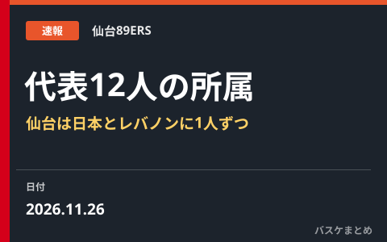

仙台89ERSのシェーファーが日本代表、同僚はレバノン代表

B.PREMIERは今日から12月3日まで、試合がありません。男子日本代表は、W杯予選のWindow5に臨みます。
この記事では、日本代表12人の所属クラブを整理します。リーグ再開後の対戦カードも、独自に分析します。
【事実】日本代表は27日にレバノン、29日にカタールと対戦
日本代表のWindow5は、アウェーの2連戦です。第1戦は日本時間11月27日の午前4時に、レバノン代表と戦います。
第2戦は11月29日の22時から、カタール代表と戦います。2連勝すれば、2027年W杯の出場権が確定する予定です。
【事実】12人は全員がB.PREMIERの所属
JBAが発表した12人は、10クラブの所属です。宇都宮ブレックスだけが3人で、ほかの9クラブは1人ずつです。
| クラブ | 地区順位 | 成績 | 日本代表の選手 |
|---|---|---|---|
| 仙台89ERS | 東1位 | 15勝4敗 | シェーファー アヴィ幸樹 |
| 名古屋D | 西1位 | 13勝2敗 | 齋藤拓実 |
| 三河 | 西3位 | 11勝4敗 | 西田優大 |
| 三遠 | 西4位 | 10勝4敗 | 佐々木隆成 |
| 東京SR | 東4位 | 13勝6敗 | ホーキンソン |
| 北海道 | 東5位 | 11勝7敗 | 富永啓生 |
| 琉球 | 西6位 | 9勝9敗 | 川真田紘也 |
| 茨城 | 東8位 | 9勝10敗 | 吉井裕鷹 |
| 宇都宮 | 東9位 | 8勝9敗 | 比江島慎、小川敦也、高島紳司 |
| 長崎 | 西9位 | 7勝12敗 | 馬場雄大 |
順位と成績は、11月26日時点のB.PREMIER順位表です。
【事実】仙台は日本代表とレバノン代表に1人ずつ
仙台89ERSのシェーファー アヴィ幸樹選手は、日本代表に選ばれました。同じ仙台のセルジオ・エル ダーウィッチ選手は、レバノン代表に選ばれました。
島根スサノオマジックのマーク・アルーホリー選手も、レバノン代表への選出が発表されています。
ほかにも北海道と名古屋Dと京都と佐賀の外国籍選手が、フィリピンかインドネシアの代表に選ばれました。
【分析】広島・群馬・A東京は日本代表の12人に入っていない
広島と群馬とA東京の選手は、12人の中にいません。この3クラブは、東西の地区で上位に入っています。
日本人選手の代表離脱という点では、上位3クラブは影響が小さいと見ます。仙台と名古屋Dと三河は、主力を1人ずつ送り出しています。
宇都宮は3人が代表に入りました。東地区9位で8勝9敗のチームから、3人が代表活動に向かいます。
【分析】再開の初週は、代表の仲間が6試合で対戦する
12月4日から6日までのB.PREMIERは、全16試合です。このうち6試合は、両チームに日本代表の選手がいます。
| 日付 | カード | 代表の選手 |
|---|---|---|
| 12月4日 | 名古屋D対長崎 | 齋藤選手と馬場選手 |
| 12月4日 | 三遠対北海道 | 佐々木選手と富永選手 |
| 12月4日 | 三河対宇都宮 | 西田選手と、比江島選手ら3人 |
| 12月6日 | 東京SR対三河 | ホーキンソン選手と西田選手 |
| 12月6日 | 長崎対北海道 | 馬場選手と富永選手 |
| 12月6日 | 宇都宮対三遠 | 比江島選手ら3人と佐々木選手 |
代表で同じコートに立った選手が、再開初週に敵として向き合います。
注目は12月4日の三河対宇都宮です。三河は西3位で、宇都宮は東9位です。
西田選手が、宇都宮の3人とどう向き合うかが見どころです。
仙台は、公式日程で12月11日のアルティーリ千葉戦が最初の試合です。東地区首位の仙台は、再開から約1週間あとに戻ります。
【未確認】インジュアリーリストと出場
公式のインジュアリーリストに、12人の名前はありません。第1戦の出場メンバーと出場時間は、試合後の公式記録が出るまで未確認です。
出典（8件）
- JBA公式：男子日本代表 Window5のメンバーとスケジュール（11/26）
- 仙台89ERS公式：シェーファー アヴィ幸樹選手 日本代表ロスター選出（11/26）
- 仙台89ERS公式：セルジオ・エル ダーウィッチ選手 レバノン代表選出（11/25）
- 島根スサノオマジック公式：マーク・アルーホリー選手 レバノン代表選出（11/25）
- 宇都宮ブレックス公式：比江島選手、小川選手、高島選手のロスター入り（11/26）
- レバンガ北海道公式：富永啓生選手 レバノン戦ロスター選出（11/26）
- B.LEAGUE公式：B.PREMIER順位表（11/26）
- B.LEAGUE公式：B.PREMIER 12月の日程（12/4〜6）